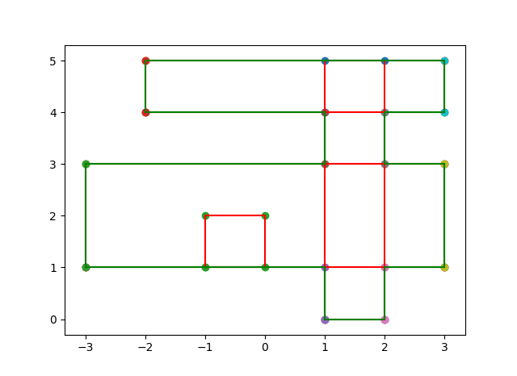

Input 7
4
1 0
2 5
-2 4
3 5
-1 1
0 2
-3 1
3 3
Output 7
Measure = 19
Number of Contour Lines = 16
Contour Line Segments:-
1 0 2 0
2 1 3 1
-3 1 1 1
2 3 3 3
-3 3 1 3
2 4 3 4
-2 4 1 4
-2 5 3 5
-3 1 -3 3
-2 4 -2 5
1 0 1 1
1 3 1 4
2 0 2 1
2 3 2 4
3 1 3 3
3 4 3 5
Contour Length = 30
